Futonlove · karta produktu · do testu
Każde rozwiązanie pokazujemy na przykładzie sofy Sakura, tak jak wyglądałoby w sklepie. Prototypy działają: kafelki i miniaturę można klikać, filmy grają. Przy każdym jest opis zmiany, powód, warunki wdrożenia oraz mierniki, po których ocenimy wynik.
wejść zaczyna się od razu na karcie produktu. Karta działa jak strona główna dla reklamy.
wizyt na karcie kończy się dodaniem do koszyka na telefonie; na komputerze 7,9% (futonlove.pl, GA4, 30 dni).
odsłon z reklamy ma tapnięcie w pole koloru. Kolor sprawdza się w zdjęciach, nie w liście.
odsłon z reklamy dochodzi do informacji o rozkładaniu i wymiarach.
Lista rozwijana z nazwą koloru („Ecru”, „Miodowy”) zamienia się w 14 kafelków z prawdziwą tkaniną. Kliknięcie zmienia duże zdjęcie na ten kolor. Cena i „Dodaj do koszyka” stoją w pierwszym ekranie, pod kafelkami.
Kolor dziś sprawdza się w zdjęciach, nie w polu wyboru: w pole wariantu tapie 20 na 100 odsłon z reklamy, a strzałkę galerii 3,8 razy na odsłonę. Zdjęcia 14 kolorów Sakury mają ten sam kadr, więc zmiana koloru na zdjęciu wygląda naturalnie.
Każdy kafelek zostaje zwykłym linkiem do karty koloru, tak jak dziś lista, więc adresy i indeksacja się nie zmieniają (do potwierdzenia z agencją SEO). Działa na każdym modelu, który ma zdjęcia kolorów w jednym kadrze.
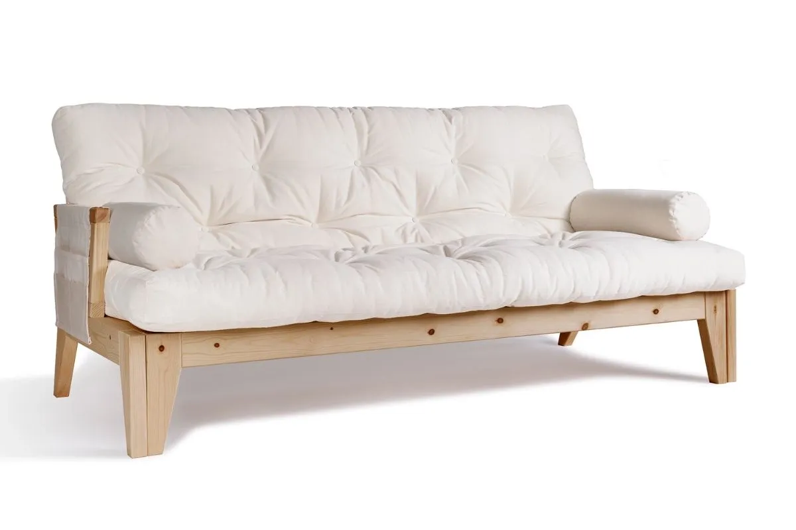
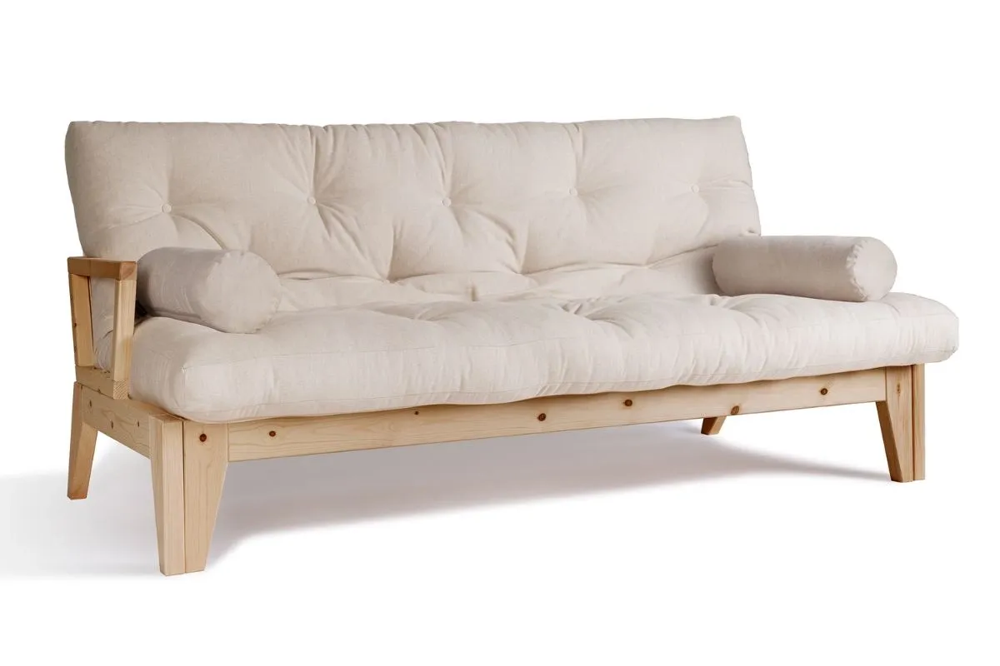
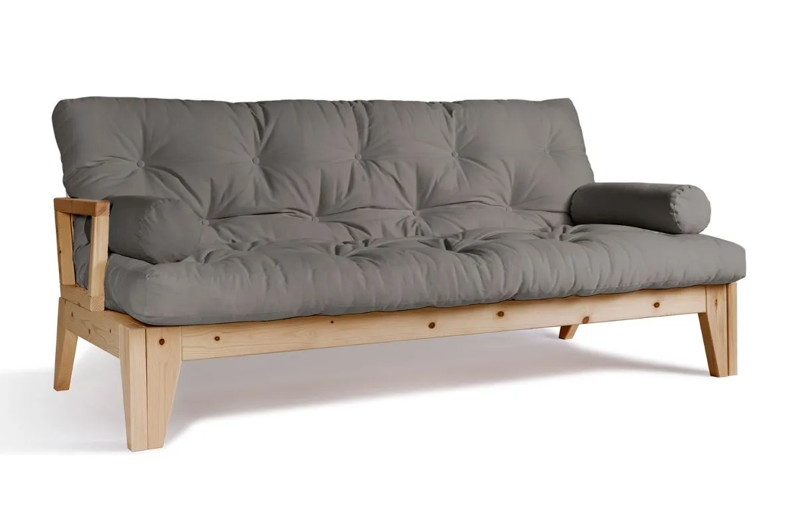
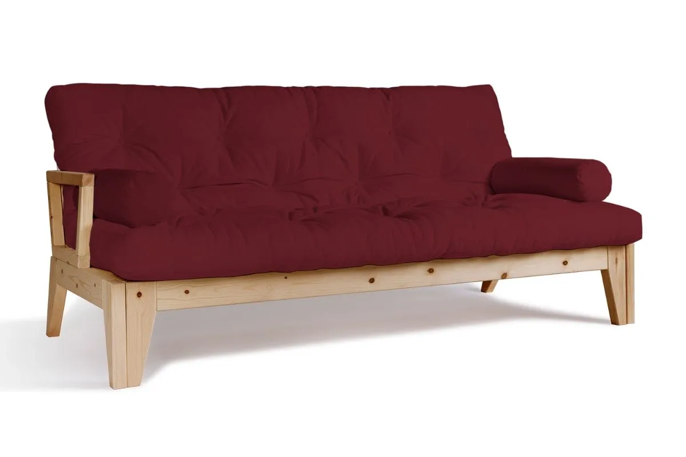
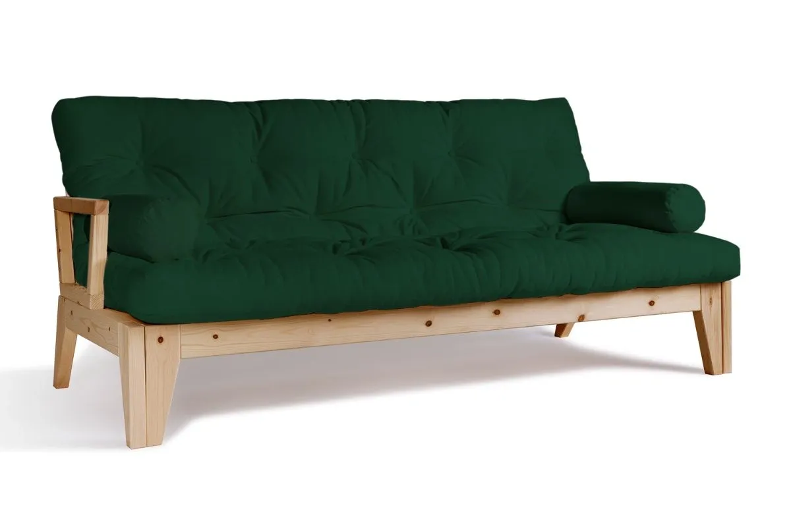
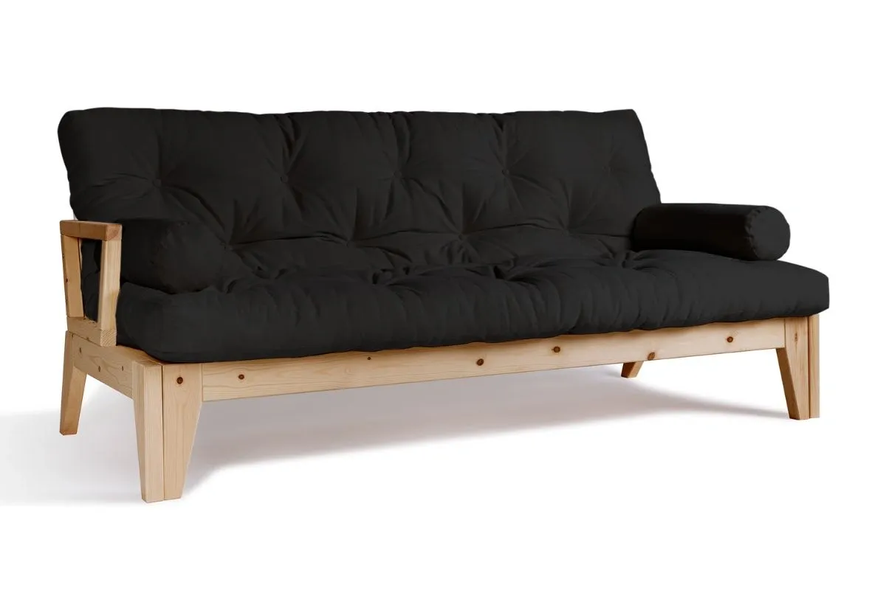
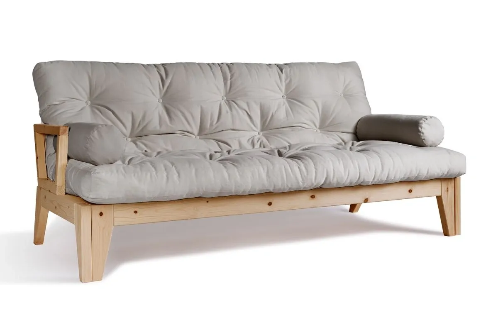
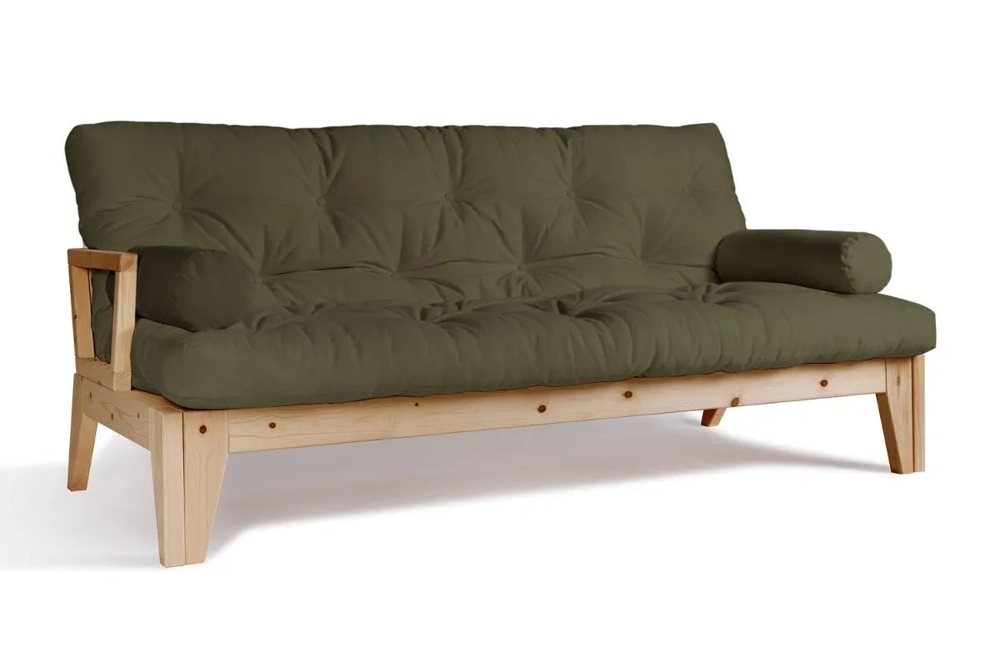
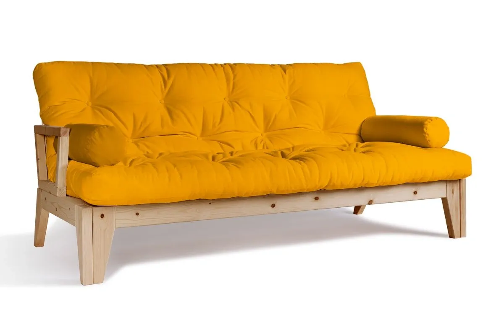
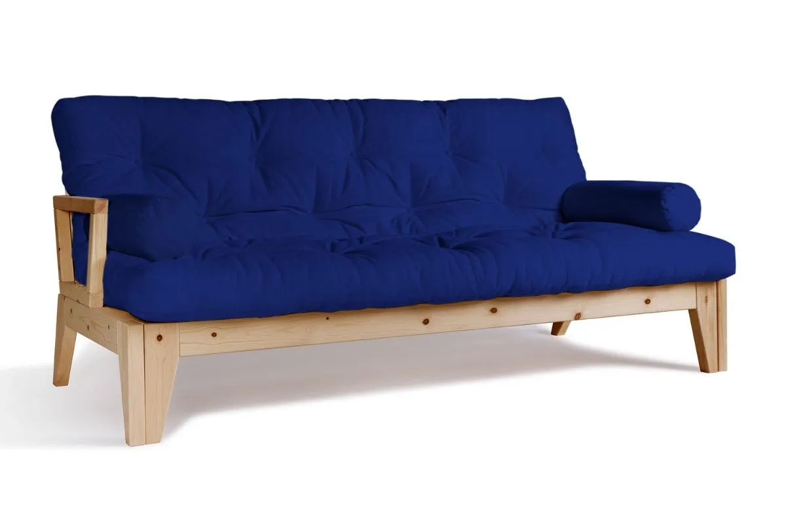
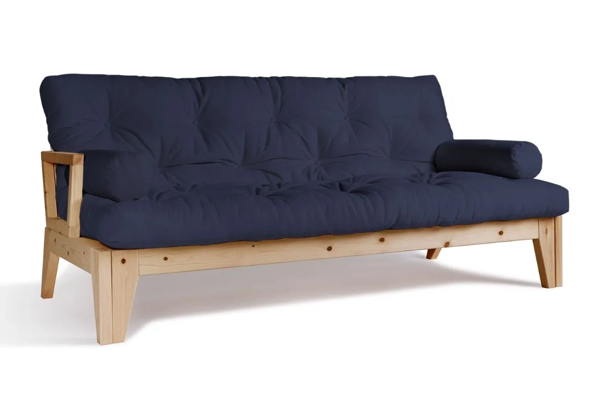
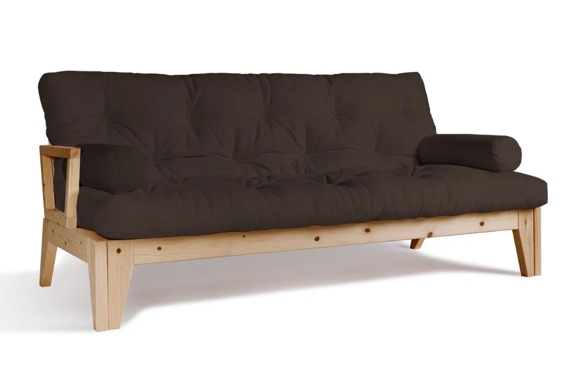
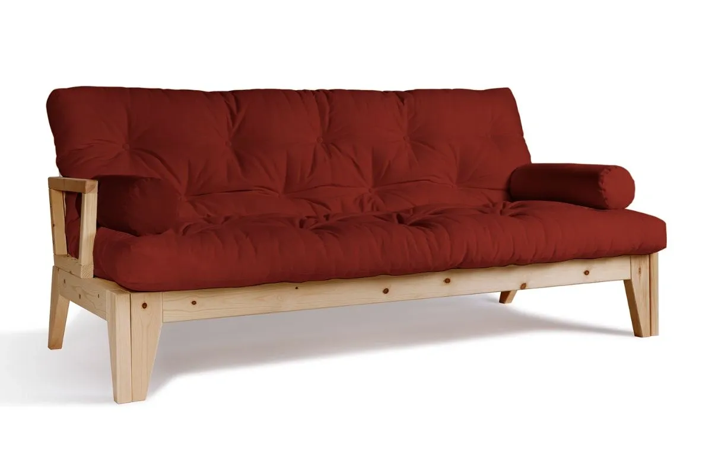
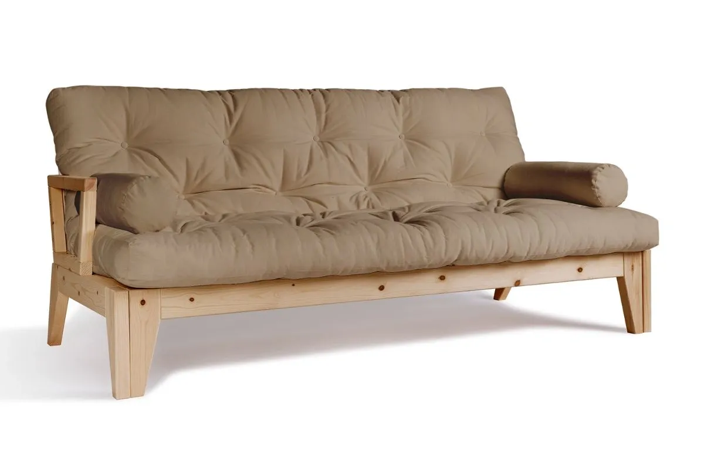
| KPI i mierniki | Co liczymy | Źródło | Kiedy dobrze |
|---|---|---|---|
| KPI | Dodania do koszyka ÷ wizyty na karcie sofy, osobno telefon i komputer | GA4 | dziś na .pl 3,9% telefon i 7,9% komputer; cel na telefonie 5%; zawsze wyżej niż wersja dzisiejsza w tym samym czasie |
| Pomocniczy | Wizyty z wyborem koloru na kafelku ÷ wizyty na karcie | zdarzenie wybor_koloru (GA4) | rośnie; dziś w pole koloru tapie 20 na 100 odsłon z reklamy |
| Pomocniczy | Wizyty z przejściem na kartę innego koloru ÷ wizyty na karcie | GA4 | rośnie: kafelek to zwykły link do karty koloru |
| Bariera | Zamówienia z rynku testu wg IdoSell; ruch z Google na karty kolorów | IdoSell · Search Console | bez spadku |
Nad kafelkami miniatura sama przechodzi przez 14 kolorów. Stuknięcie ją zatrzymuje i zmienia duże zdjęcie na ten kolor; drugie stuknięcie losuje dalej. Kafelki działają jak w rozwiązaniu 1.
Na telefonie widać naraz tylko pierwszy ekran. Ruch w miniaturze pokazuje od razu, że ta sama sofa jest w 14 kolorach, zanim ktoś przewinie albo wyjdzie. Na komputerze wszystkie kafelki są widoczne od razu, więc animacja niczego tam nie dodaje.
Na komputerze karta zostaje jak w rozwiązaniu 1. Animacja wymaga małego skryptu ładowanego tylko na telefonie i zdjęć wszystkich kolorów w tym samym kadrze.
| KPI i mierniki | Co liczymy | Źródło | Kiedy dobrze |
|---|---|---|---|
| KPI | Dodania do koszyka ÷ wizyty na karcie sofy, telefon | GA4 | telefon: dziś 3,9% na .pl, cel 5%; wyżej niż rozwiązanie 1 i wersja dzisiejsza |
| Pomocniczy | Wizyty, w których ktoś zatrzymał miniaturę ÷ wizyty na karcie | zdarzenie zlap_kolor (GA4) | co najmniej co dziesiąta wizyta (próg roboczy, do korekty po 2 tygodniach) |
| Pomocniczy | Wizyty z wyborem koloru ÷ wizyty na karcie | zdarzenie wybor_koloru (GA4) | wyżej niż w rozwiązaniu 1 |
| Bariera | Wizyty zakończone bez przewinięcia ÷ wizyty na karcie; czas ładowania pierwszego ekranu | Clarity · PageSpeed | bez wzrostu |
Na ekranie komputera wszystkie 14 kafelków mieści się obok zdjęcia, więc wersja na komputer jest taka jak w rozwiązaniu 1.
Na pierwszym miejscu galerii zamiast zdjęcia stoi 37-sekundowy film: Sakura w 10 ujęciach z krótkimi podpisami (rama z sosny, futon, wałki, organizer, poduszki, wymiary, rozkładanie, spanie 120 × 194 cm). Wybór koloru zostaje taki jak dziś.
57% wejść zaczyna się od razu na karcie produktu, a rozkładanie i wymiary są dziś w dalszych zdjęciach i zwiniętych „Szczegółowych informacjach”. Film pokazuje to w pierwszym ekranie, bez przewijania galerii.
Bez kafelków kolorów, bo komplet 10 ujęć jest tylko dla koloru Ecru; inne kolory mają jedno zdjęcie. Film startuje dopiero po załadowaniu strony, a do tego czasu widać zwykłe zdjęcie. W Zakupach Google i w reklamach zostaje zdjęcie, nie film (do sprawdzenia w IdoSell).
| KPI i mierniki | Co liczymy | Źródło | Kiedy dobrze |
|---|---|---|---|
| KPI | Dodania do koszyka ÷ wizyty na karcie sofy, telefon i komputer | GA4 | dziś na .pl 3,9% telefon i 7,9% komputer; cel na telefonie 5%; zawsze wyżej niż wersja dzisiejsza w tym samym czasie |
| Pomocniczy | Wizyty z przewinięciem poniżej pierwszego ekranu ÷ wizyty na karcie | Clarity | rośnie: ruch zatrzymuje i ciekawi |
| Pomocniczy | Wizyty z otwarciem „Szczegółowych informacji” ÷ wizyty na karcie | Clarity | spada: rozkładanie i wymiary widać na filmie |
| Bariera | Czas ładowania pierwszego ekranu; zdjęcie główne w Zakupach Google | PageSpeed · Merchant Center | bez pogorszenia; w reklamie zostaje zdjęcie |
Ten sam film, z paskiem miniatur pod spodem, jako osobny blok „Sakura z każdej strony” pod ceną i koszykiem, przed opisem. Zdjęcie główne i wybór koloru zostają bez zmian.
Do rozkładania i wymiarów dochodzi dziś ok. 29% odsłon z reklamy. Blok podaje je w jednym miejscu tym, którzy przewijają, czyli osobom, które się namyślają. Nie rusza pierwszego ekranu, więc łatwo go wdrożyć i łączyć z innymi zmianami.
Film ładuje się dopiero wtedy, gdy blok wjeżdża na ekran, więc nie spowalnia strony. Opis pod spodem zostaje bez zmian, czyli treść pisana pod wyszukiwarkę jest nietknięta.
Rama, futon, wałki, rozkładanie i wymiary w 10 ujęciach.
Sofa Sakura z ramą z litej sosny i grubym futonem. W dzień sofa, wieczorem pełnowymiarowe łóżko 120 × 194 cm. W zestawie 2 wałki i 4 poduszki…
| KPI i mierniki | Co liczymy | Źródło | Kiedy dobrze |
|---|---|---|---|
| KPI | Dodania do koszyka ÷ wizyty na karcie sofy, telefon i komputer | GA4 | dziś na .pl 3,9% telefon i 7,9% komputer; cel na telefonie 5%; zawsze wyżej niż wersja dzisiejsza w tym samym czasie |
| Pomocniczy | Wizyty, w których film był widoczny co najmniej w połowie ÷ wizyty na karcie | zdarzenie film_widoczny (GA4) | co najmniej co trzecia wizyta; dziś do rozkładania i wymiarów dochodzi ok. 29% odsłon z reklamy |
| Pomocniczy | Wizyty z dodaniem do koszyka po obejrzeniu filmu ÷ wizyty z obejrzeniem | GA4 | wyżej niż w wizytach bez filmu |
| Bariera | Czas ładowania strony (film ładuje się dopiero, gdy jest widoczny) | PageSpeed | bez pogorszenia |
Rama, futon, wałki, rozkładanie i wymiary w 10 ujęciach.
Sofa Sakura z ramą z litej sosny i grubym futonem. W dzień sofa, wieczorem pełnowymiarowe łóżko 120 × 194 cm. W zestawie 2 wałki i 4 poduszki.
Sofa 200 × 85 cm, wysokość 79 cm · spanie 120 × 194 cm
Jedna zmiana naraz na jednej karcie, żeby było wiadomo, co dało wynik. Najpierw mniejszy rynek, potem .pl.
Element wdrożony na wersji testowej szablonu. Sprawdzamy telefon i komputer, akceptujecie, dopiero potem włączamy.
Test na futonlove.cz albo futonlove.nl: połowa wizyt widzi dzisiejszą kartę, połowa nową. Jeśli IdoSell nie podzieli ruchu, porównujemy z tym samym okresem na .pl.
Test trwa, aż na kartach sof zbierze się tyle wizyt, że różnicę w koszyku widać wyraźnie. Czas ustalimy po sprawdzeniu ruchu na rynku testu.
Wersja, która wygra, idzie na .pl i na pozostałe modele sof.
Nie zostawiam Was z projektem. Przygotowuję wszystko, czego potrzebuje osoba wdrażająca szablon, i pilnuję wdrożenia razem z agencją IdoSell.
HTML, CSS i skrypt do wklejenia w szablon IdoSell, z opisem, gdzie go wstawić.
14 kafelków tkanin, filmy MP4 z obrazem startowym, w rozmiarach na telefon i komputer.
Nazwy zdarzeń i sposób ich podpięcia w Google Tag Managerze, żeby wynik był liczony tak samo na każdym rynku.
Przed włączeniem na żywo sprawdzam element na telefonie i komputerze; włączacie Wy.
Pierwsze dni sprawdzam, czy zdarzenia się liczą; po teście podsumowanie i decyzja co dalej.
Od odpowiedzi zależy, które rozwiązanie wdrożymy najpierw i jak podzielimy ruch w teście.
Liczby: Google Analytics i Clarity dla futonlove.pl (30–90 dni), szczegóły w raportach w hubie. Zdjęcia i ceny Sakury z futonlove.pl z 17.11. Kolor przycisków w prototypach jest roboczy, na stronie zostaje kolor sklepu. Prototyp to propozycja do testu, nie zmiana wdrożona w sklepie.